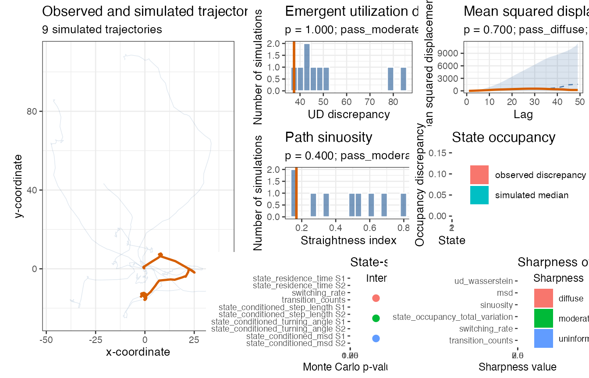

Generative validation for HMM-SSF models
Source:vignettes/hmmssf-generative-validation.Rmd
hmmssf-generative-validation.RmdThis vignette introduces the minimal workflow implemented in
HMMSSFGenerativeRepair. It uses a simulated HMM-SSF-like
object so that the example can run without empirical animal movement
data.
The goal is generative validation: simulate trajectories from a fitted model, then compare the observed trajectory with the simulated trajectories. The main quantities are diagnostic statistics and Monte Carlo p-values.
Four trajectory-generation strategies
An HMM-SSF has two coupled layers:
- a latent state process;
- a state-specific spatial movement and selection process.
The package separates four ways to generate the latent state path. After the state path is chosen, spatial steps are generated from the state-specific movement and selection kernel.
| Method | State path generation | Diagnostic role |
|---|---|---|
markov |
Simulate states from the fitted transition model. | Validates the full fitted generative process. |
viterbi |
Reuse the Viterbi state path. | Checks whether state-specific kernels work if the decoded path is fixed. |
viterbi_tube |
Sample paths close to the Viterbi path under an epsilon tolerance. | Checks sensitivity to near-optimal latent paths. |
posterior |
Sample state paths using posterior state information. | Checks sensitivity to latent-state uncertainty. |
The markov strategy is the natural full-model generative
check. The other strategies are diagnostic decompositions. They help
identify whether a failure is more likely due to the latent transition
model, the decoded state path, or the state-specific movement
kernels.
Minimal example
library(HMMSSFGenerativeRepair)
fit <- example_hmmssf_list(n = 50, seed = 123)
observed_track <- fit$observed_trackThe call below runs all four simulation strategies and computes a small set of trajectory-level and state-aware diagnostics.
diagnosis <- diagnose_hmmssf(
fit = fit,
observed_track = observed_track,
n_sims = 9,
methods = c("markov", "viterbi", "viterbi_tube", "posterior"),
diagnostics = c(
"ud_wasserstein",
"msd",
"sinuosity",
"state_occupancy",
"state_residence_time",
"switching_rate",
"transition_counts",
"state_conditioned_step_length",
"state_conditioned_turning_angle",
"state_conditioned_msd"
),
parameter_uncertainty = FALSE,
epsilon = 10,
seed = 123
)
head(summary(diagnosis))
#> method diagnostic state observed_statistic
#> 1 markov ud_wasserstein NA 3.743521e+01
#> 2 markov msd NA 7.904829e+07
#> 3 markov sinuosity NA 2.808506e-01
#> 4 markov state_occupancy 1 7.111111e-02
#> 5 markov state_occupancy 2 7.111111e-02
#> 6 markov state_occupancy_total_variation NA 7.111111e-02
#> simulated_median simulated_q025 simulated_q975 p_value sharpness_value
#> 1 4.477693e+01 3.864234e+01 8.435955e+01 1.0 1.020999
#> 2 1.074852e+08 1.290036e+07 1.258699e+09 0.7 8.776384
#> 3 2.223835e-01 5.437808e-02 3.919304e-01 0.4 1.291545
#> 4 1.475000e-01 3.500000e-02 4.600000e-01 0.8 1.181818
#> 5 1.475000e-01 3.500000e-02 4.600000e-01 0.8 2.294118
#> 6 1.475000e-01 3.500000e-02 4.600000e-01 0.8 2.881356
#> sharpness_label interpretation_label n_sims n_effective warning
#> 1 moderate pass_moderate 9 9
#> 2 uninformative pass_diffuse 9 9
#> 3 moderate pass_moderate 9 9
#> 4 moderate pass_moderate 9 9
#> 5 diffuse pass_diffuse 9 9
#> 6 diffuse pass_diffuse 9 9The dashboard can be drawn for any simulation strategy with the
method argument.
plot(diagnosis, method = "markov")
The same object contains dashboards for the other strategies:
Reading the Monte Carlo p-values
For each diagnostic, the package compares the observed discrepancy with the corresponding simulated discrepancies. Small p-values indicate that the observed trajectory is atypical under the simulated model.
global_rows <- is.na(diagnosis$diagnostics$state)
diagnosis$diagnostics[
global_rows,
c("method", "diagnostic", "observed_statistic", "simulated_median", "p_value")
]
#> method diagnostic observed_statistic
#> 1 markov ud_wasserstein 3.743521e+01
#> 2 markov msd 7.904829e+07
#> 3 markov sinuosity 2.808506e-01
#> 6 markov state_occupancy_total_variation 7.111111e-02
#> 9 markov switching_rate 6.122449e-02
#> 10 markov transition_counts 1.126964e-01
#> 17 viterbi ud_wasserstein 2.084967e+01
#> 18 viterbi msd 1.240015e+06
#> 19 viterbi sinuosity 1.189725e-01
#> 22 viterbi state_occupancy_total_variation 5.551115e-17
#> 25 viterbi switching_rate 0.000000e+00
#> 26 viterbi transition_counts 2.775558e-17
#> 33 viterbi_tube ud_wasserstein 2.533931e+01
#> 34 viterbi_tube msd 3.713978e+06
#> 35 viterbi_tube sinuosity 1.644925e-01
#> 38 viterbi_tube state_occupancy_total_variation 3.111111e-02
#> 41 viterbi_tube switching_rate 6.122449e-02
#> 42 viterbi_tube transition_counts 7.689717e-02
#> 49 posterior ud_wasserstein 3.340468e+01
#> 50 posterior msd 2.459208e+07
#> 51 posterior sinuosity 2.958648e-01
#> 54 posterior state_occupancy_total_variation 4.666667e-02
#> 57 posterior switching_rate 6.802721e-02
#> 58 posterior transition_counts 9.800536e-02
#> simulated_median p_value
#> 1 4.477693e+01 1.0
#> 2 1.074852e+08 0.7
#> 3 2.223835e-01 0.4
#> 6 1.475000e-01 0.8
#> 9 4.591837e-02 0.3
#> 10 2.051312e-01 0.8
#> 17 2.412409e+01 0.7
#> 18 2.238138e+06 0.8
#> 19 9.094134e-02 0.5
#> 22 5.551115e-17 1.0
#> 25 0.000000e+00 1.0
#> 26 2.775558e-17 1.0
#> 33 2.888445e+01 0.9
#> 34 8.029522e+06 0.7
#> 35 1.025450e-01 0.4
#> 38 3.500000e-02 0.9
#> 41 2.295918e-02 0.1
#> 42 6.300556e-02 0.5
#> 49 4.410218e+01 1.0
#> 50 1.211236e+07 0.5
#> 51 1.506799e-01 0.1
#> 54 6.000000e-02 0.7
#> 57 1.530612e-02 0.1
#> 58 8.506802e-02 0.5With n_sims = 99, the smallest possible Monte Carlo
p-value is 0.01, because the rank p-value uses the
finite-simulation correction
(number of simulated statistics at least as extreme as observed + 1) /
(number of simulations + 1)What the four strategies diagnose
The four strategies should not be interpreted as four competing models. They are four diagnostic views of the same fitted model.
If markov fails but viterbi passes, the
state-specific movement kernels may be reasonable, while the fitted
transition model may produce unrealistic state occupancy, switching, or
residence times.
If both markov and viterbi fail, the
problem is more likely in the state-specific movement kernels, omitted
covariates, movement distributions, or state definitions.
If viterbi_tube differs from viterbi,
conclusions are sensitive to small changes around the decoded latent
path.
If posterior differs from viterbi,
conclusions are sensitive to state classification uncertainty.
One-state models
For a one-state model, the latent process is degenerate. All four state generation strategies collapse to the same state path:
1, 1, 1, ..., 1In that case, the meaningful validation is the original trajectory-level generative validation: compare observed and simulated trajectories using global diagnostics such as UD, MSD, and sinuosity. State diagnostics such as occupancy, switching rate, and transition counts are mathematically trivial.
one_state_fit <- list(
initial = 1,
transition = matrix(1, 1, 1),
kernels = list(list(
step = list(dist = "gamma", shape = 2, scale = 0.6),
angle = list(dist = "wrapped_normal", mean = 0, sd = 0.9)
)),
observed_track = observed_track,
viterbi_path = rep(1L, nrow(observed_track)),
posterior = matrix(1, nrow = nrow(observed_track), ncol = 1),
log_emission = matrix(0, nrow = nrow(observed_track), ncol = 1)
)
one_state_diagnosis <- diagnose_hmmssf(
fit = one_state_fit,
observed_track = observed_track,
n_sims = 9,
methods = c("markov", "viterbi", "viterbi_tube", "posterior"),
diagnostics = c("ud_wasserstein", "msd", "sinuosity", "state_occupancy"),
parameter_uncertainty = FALSE,
epsilon = 0,
seed = 321
)
one_state_diagnosis$diagnostics[
one_state_diagnosis$diagnostics$diagnostic %in%
c("ud_wasserstein", "msd", "sinuosity", "state_occupancy"),
c("method", "diagnostic", "state", "p_value")
]
#> method diagnostic state p_value
#> 1 markov ud_wasserstein NA 0.3
#> 2 markov msd NA 0.1
#> 3 markov sinuosity NA 0.9
#> 4 markov state_occupancy 1 1.0
#> 6 viterbi ud_wasserstein NA 0.3
#> 7 viterbi msd NA 0.1
#> 8 viterbi sinuosity NA 0.9
#> 9 viterbi state_occupancy 1 1.0
#> 11 viterbi_tube ud_wasserstein NA 0.3
#> 12 viterbi_tube msd NA 0.1
#> 13 viterbi_tube sinuosity NA 0.9
#> 14 viterbi_tube state_occupancy 1 1.0
#> 16 posterior ud_wasserstein NA 0.3
#> 17 posterior msd NA 0.1
#> 18 posterior sinuosity NA 0.9
#> 19 posterior state_occupancy 1 1.0This is the expected behavior: the trajectory-level diagnostics remain meaningful, while the state process contributes no additional structure.
Notes on sharpness
The primary validation quantity is the Monte Carlo p-value. The package also computes a sharpness label, which summarizes whether the simulated diagnostic envelope is narrow or diffuse. This label does not replace the p-value. It is a secondary warning about how informative the simulated reference distribution is.
For workflows that should match a p-value-only validation report, report the diagnostic statistic, the simulation envelope, and the Monte Carlo p-value.